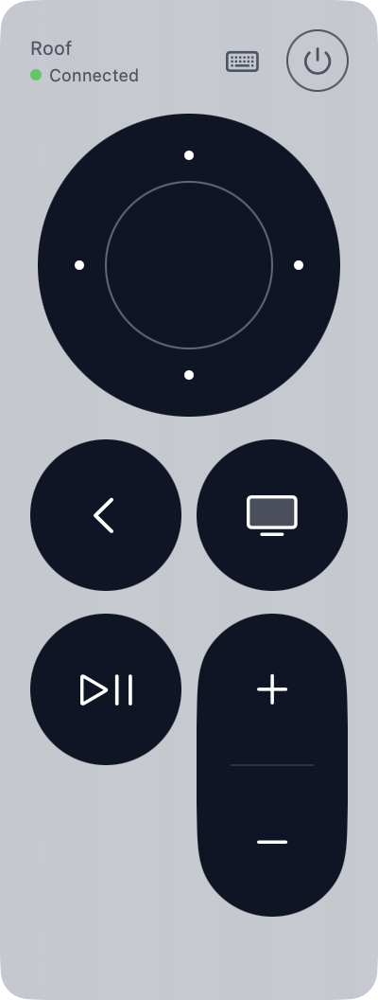
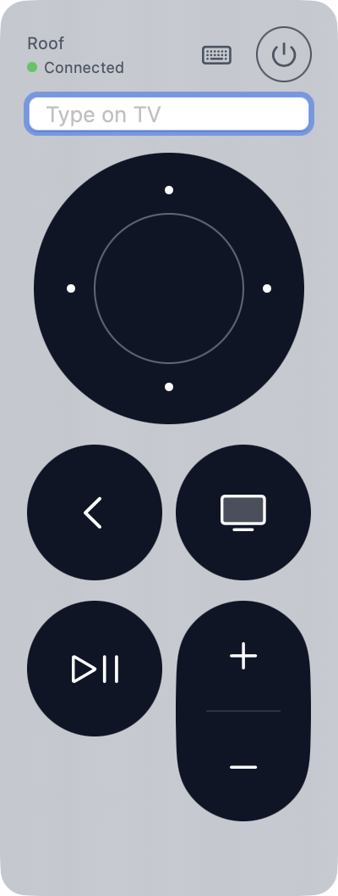
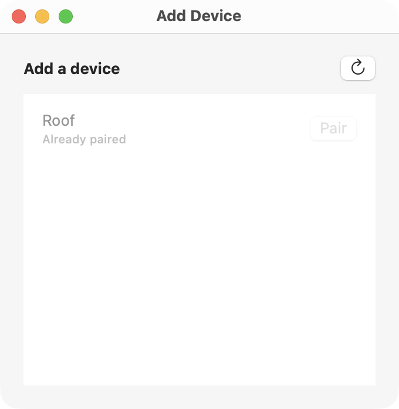

An Apple TV remote that lives in your Mac's menu bar. Click the icon, use your keyboard, get back to the couch.
Free and open source · macOS 14 or later · Apple silicon & Intel



Left-click the icon to show the remote. Right-click to switch devices, pair a new one, or quit.
Arrow keys, return, and backspace do what you'd expect while the remote is in front.
When a text field on the TV gets focus, a text box pops open on your Mac. Type and it appears on screen.
Speaks Apple's Companion protocol directly: pairing, encryption and discovery, no helper processes.
| ← ↑ → ↓ | Navigate |
| return or space | Select |
| delete | Back / Menu |
| h | Home (hold) |
| [ ] | Volume down / up |
| k | Open the text box |